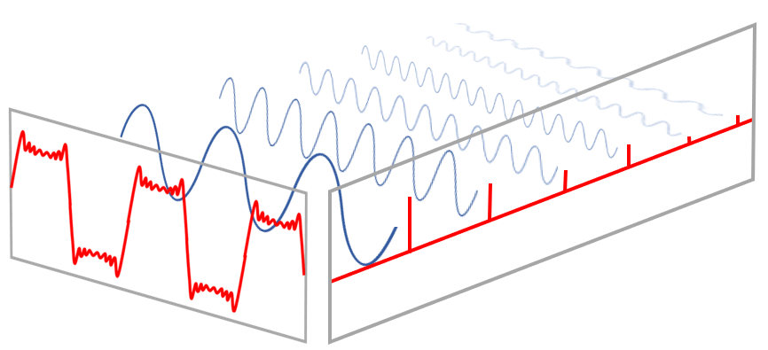
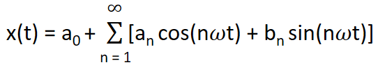
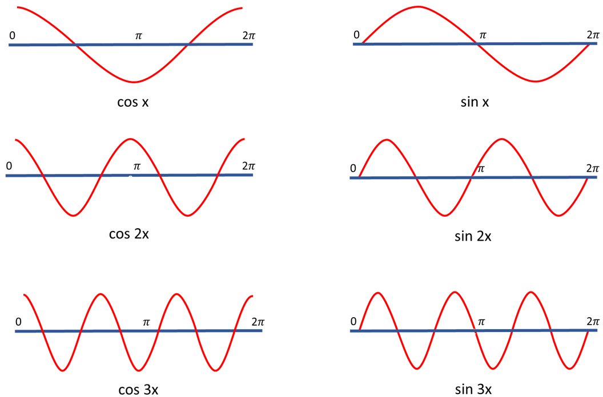
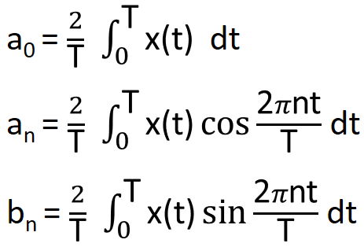
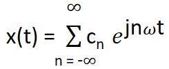
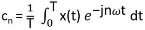
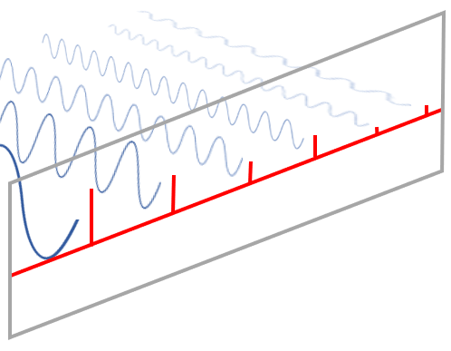
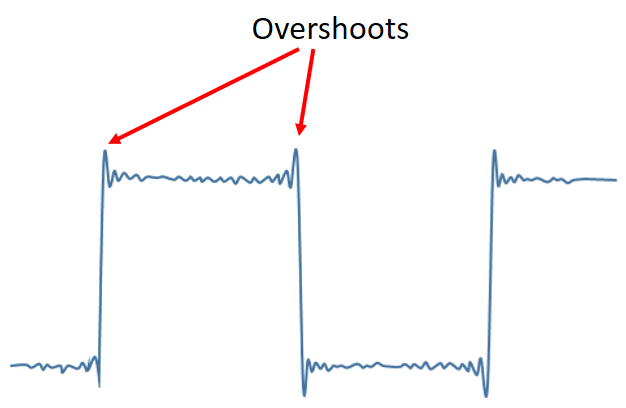

HOME BLOG EBOOKS ABOUT CONTACT SHOP
In 1807, Joseph Fourier (pronounced Fouye) came up with a mathematical tool for representing periodic functions, called Fourier series. Using the Fourier series it is possible to express periodic functions in terms of some combination of sinusoids (sines and cosines). This is applicable to any periodic function, however awkwardly shaped they may be. Isn’t this cool?? The idea was so crazy that, even other famous mathematicians of the time, like Lagrange opposed it.

The above figure perfectly depicts the idea of the Fourier series. Notice how a series of sinusoids combine together to form the resultant function, which looks nothing like a sinusoid. These sinusoid components can have different amplitudes and different frequencies.
Fourier series is not just a pretty textbook concept, it has real practical applications in many different areas of engineering. For instance, in signal processing, instead of using a single complex signal as the input to a system and analyzing the response (which is harder), why not input component sinusoids to the system and add up their responses (this is easier). Wouldn’t both be the same?? Yes, it would be, thanks to Fourier series. So the only thing we really need to know is the response of the system to sinusoids. From this we can predict the response to other periodic signals.
The General expression for Fourier series is:

Here a0,a1,a2…,b1,b2,b3….are the Fourier coefficients. They tell us how much a sine or cosine function of a particular frequency is contributing to the resultant function.
The value of a0 tells us how much a cosine of zero frequency (cos 0 =1) or constant term is present in the resultant function. a0 is also called the DC value or the Average value or the DC offset. Since all the other terms in the expansion are pure sinusoids, their individually average to zero, so the average value solely depends on a0.
Since sin 0 = 0, there can’t be any contribution from zero frequency sine function, so b0 is always 0. The value of a1 tells us how much a cosine of fundamental frequency is present in the resultant function. Similarly, contribution from each sinusoid in the resultant function can be found out separately.
For example, if x(t) = 4sin2ωt + 3cosωt + 10sin3ωt, that means function x(t) is made up of a sin wave of twice the fundamental frequency (of amplitude 4), a cos wave of fundamental frequency (of amplitude 3) and a sin wave of 3 times the fundamental frequency (of amplitude 10).

The fourier coefficients can be obtained as:

Fourier series can be expressed in a more compact form using complex notation. Using the complex notation, we can represent the contributions from both sine and cosine waves of the same frequency by a single coefficient.

This is called the synthesis equation. Here the Fourier coefficients are complex. This notation has its own advantages, unlike in previous case, it is possible to calculate all Fourier coefficients using a single expression.
The values of cn can be obtained using the expression:

This expression is called the analysis equation and the plot of |cn| vs n is called the frequency spectrum of the signal.

Notice the lines corresponding to each frequency component in the above picture. This is exactly the Frequency spectrum. It tells us how much each frequency component contributes to the original signal. This information is invaluable to us.
Let’s look at a practical example: In earth quake prone areas, houses are built to resist shock waves. But the earthquake is not a single frequency signal, it has many frequency components and it’s not possible to design houses that are resistant to the entire wave. To overcome this difficulty, seismologists and structural engineers, do Fourier analysis on earthquake wave and use the frequency spectrum obtained, to figure out the dominant components in the wave. This way it is possible to design houses that are resistant to these particular frequency components in the wave. The other smaller components don’t have any significant impact so they can ignored.
The main reason behind Lagrange’s objection to the Fourier series was that, he believed it is not possible to represent discontinuous functions (like square wave) in terms of sinusoids. Guess what, there was some merit behind Lagrange’s argument. In some way he was spot on, it is actually impossible to perfectly represent discontinuous signals using sinusoids.

Notice how there is an overshoot at the corners of the square wave in the figure above. When a function takes a sudden jump, the Fourier estimation ends up overshooting that jump. This is known as Gibbs phenomenon. That overshoot will never go to zero no matter how many terms are added.